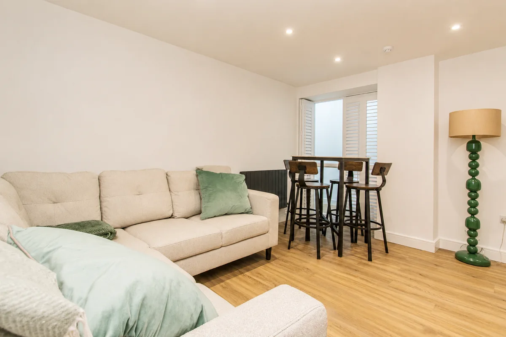
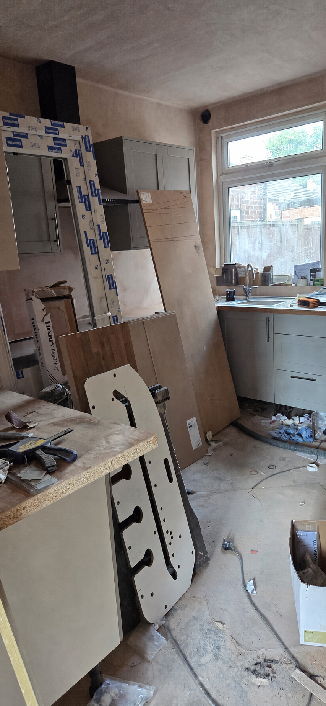
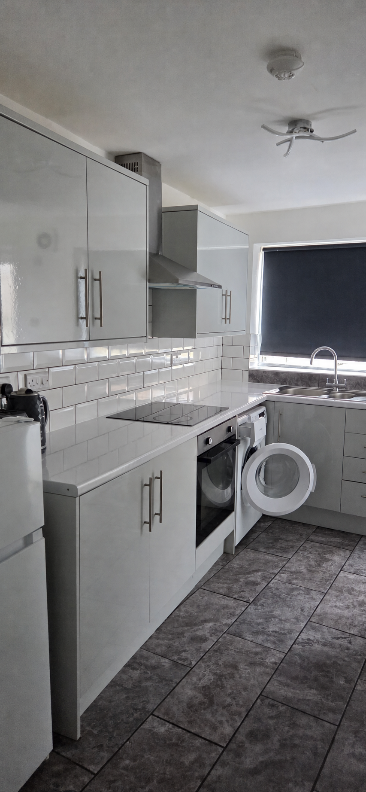

Define the outcome
Set out how the room needs to function and what can remain before selecting finishes or replacement items.
Rental property improvements
Re-Let plans practical rental property refurbishments in Nottingham for landlords and letting agents, balancing condition, durability, presentation and the next tenancy.

Completed work
The Kilbourn Street lounge shows the completed presentation after extensive work elsewhere in the property. The wider case study records stripped-back, in-progress and finished stages.
See the full refurbishment record →

Good refurbishment decisions come from understanding the property, its likely use and what genuinely needs changing. We help shape a practical package instead of adding work without purpose.
Set the priorities: condition, durability, presentation or a combination.
Confirm inclusions, exclusions, selections and any specialist input.
Order work logically around access, drying time, other trades and target dates.
Share the property, target outcome and likely timing for an initial conversation.
Set out how the room needs to function and what can remain before selecting finishes or replacement items.
Record rooms, surfaces, fittings and exclusions so follow-on work does not appear unexpectedly.
Allow for making good, cleaning and a final photographic record after the main work is complete.
Questions
Clear starting points for scoping this service.
Define the intended outcome, rooms included, retained items, access route, decision maker and any fixed tenancy or marketing dates. Separate essential work from optional improvements.
Yes. A coherent project can focus on one room or a defined group of spaces when the boundaries, finishes and related making-good work are agreed.
An empty property can simplify access, but the sequence still needs to allow for removal, repairs, materials, drying, cleaning and final checks before the next stage.
Share the postcode, photographs, occupancy and priorities to start a practical conversation.